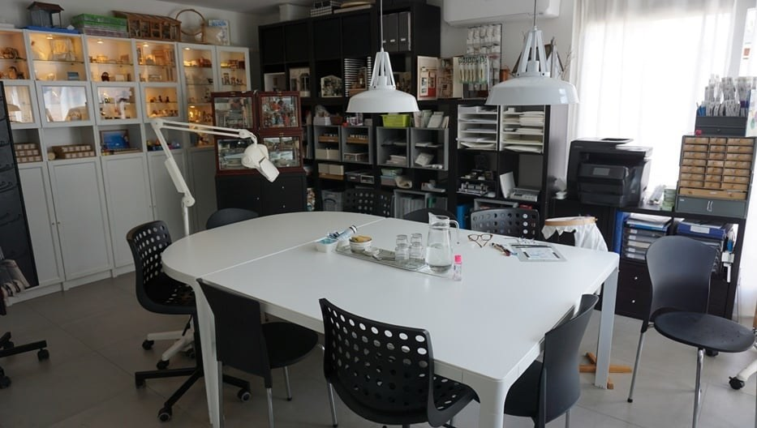
Alles voor kantklossen, handwerk en het poppenhuis
Garens, kantklosbenodigdheden, borduur-, brei- en haakpakketten en poppenhuisbehang in schaal 1:12. Sinds 2005, vanuit ons atelier in Roosendaal.
2.231 reviews op WebwinkelKeur
- Gratis verzending vanaf € 55 in NL & BE
- 9,8 uit 2.231 reviews
- Atelier in Roosendaal, op afspraak
- Op beurzen in NL & BE
Ons assortiment
Van kantklosjes tot poppenhuisbehang. Nieuw en gebruikt, en elke week komt er iets bij.
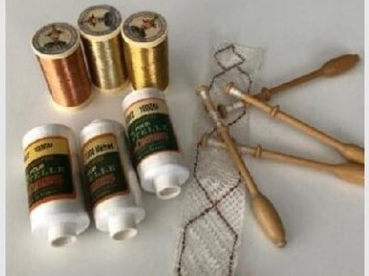
Kantklossen
Klosjes, kussens, spelden, garens en patronen. Nieuw en gebruikt.
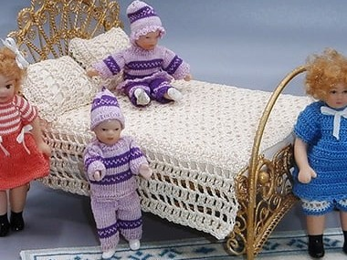
Handwerk
Borduren, mini-breien, mini-haken, frivolité, punchen en vilten.
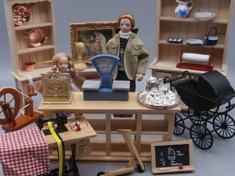
Poppenhuis 1:12
Behang en vloeren, poppen, verlichting en doe-het-zelfmaterialen.
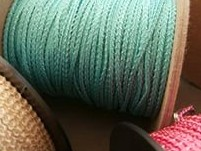
Band, kant & lint
Picotband, Engelse en Franse kant, zijdelint en koord.
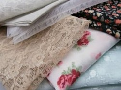
Stoffen
Effen, bloemetjes, geruit en glamour. Ook stofpakketjes.
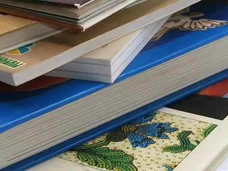
Boeken & tijdschriften
Kantklos-, handwerk- en poppenhuisboeken, nieuw en gebruikt.
Gemaakt met onze materialen
Niets zo leuk als zien wat er met onze garens en materialen gemaakt wordt. Hier twee werkstukken van klanten.
Naast de materialen ontwerpen we onder de naam Haars Design ook eigen borduur-, brei- en haakpakketten en workshops voor de poppenhuishobby.
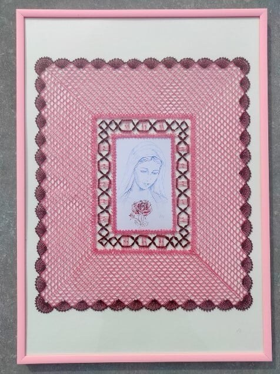
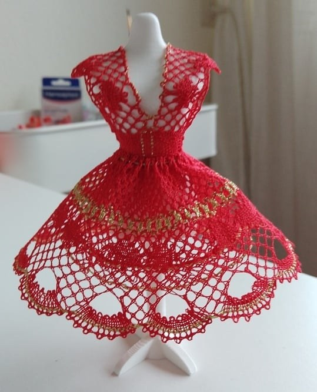
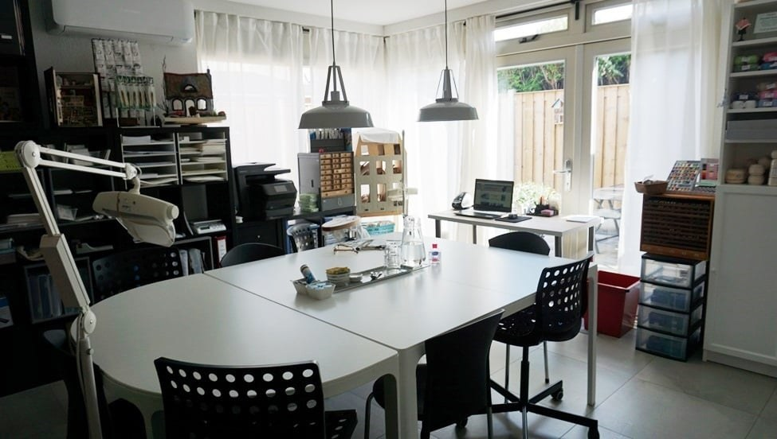
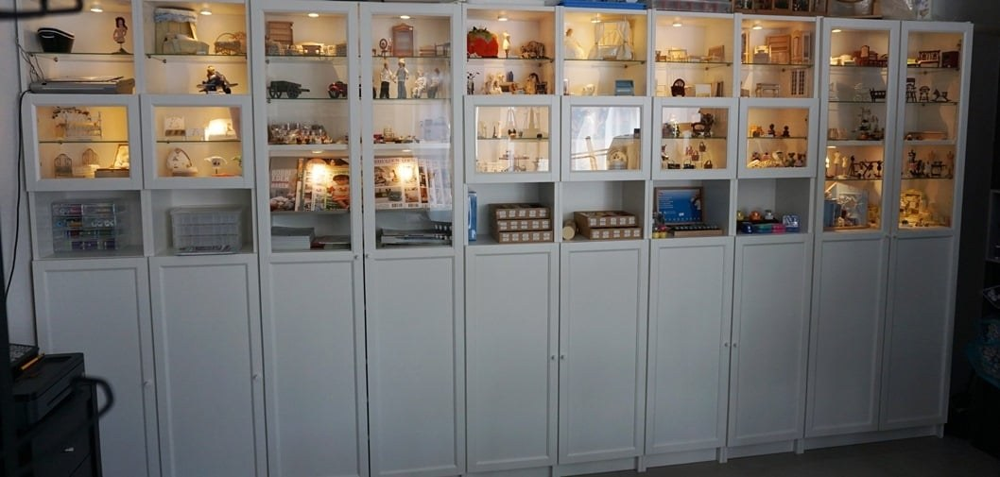
Kom gerust kijken in ons atelier
Op de beurzen merkten we dat het voor sommige mensen lastig is om online een keuze te maken, bijvoorbeeld in kleuren en afmetingen. Daarom kunt u op afspraak ons atelier in Roosendaal bezoeken.
- Alles in het echt zien en uw keuze maken
- Online besteld? Haal uw bestelling op afspraak op
- Workshops en inloopdagen in het atelier
- De koffie en thee staan klaar
Afspraak maken
Bel of app ons even, dan spreken we een moment af. Bereikbaar van 10.30 tot 19.30 uur.
Wat klanten zeggen
Snel verstuurd, netjes verpakt en persoonlijk contact.
2.231 reviews
WebwinkelKeur
"De bestelling kwam snel met een leuke attentie erbij: minischaartje. De garens waren goed verpakt zodat ze schoon bleven."
Jolanda K. · WebwinkelKeur"Super vlotte levering, prima materialen en zeer bereikbaar + hulpvaardig. Absolute aanrader! Ik kom zeker terug."
Marie G. · WebwinkelKeur"Tevreden, ruim (klos) assortiment, vlotte afhandeling, persoonlijk telefoon/mailcontact."
Toine · WebwinkelKeur"Pakje was niet aangekomen, er werd snel actie ondernomen en mij geïnformeerd. Klasse."
Rinie R. · WebwinkelKeur"Altijd alles correct op tijd en keurig verpakt. Bedankt Anja!"
Riet van H. · WebwinkelKeur"Super mooi spul, snel verzonden, goeie kwaliteit!"
Kim A. · WebwinkelKeurBeurzen en workshops
U vindt ons op poppenhuisbeurzen, kantmarkten en festivals in Nederland, België en Duitsland. Wilt u dat we uw bestelling meenemen naar een beurs of kantmarkt? Bestel dan vooraf via de webshop.
Doe- en ontmoetingsdag De Kantkriebel
Baarle-Nassau · er is nog ruimte
Poppenhuisbeurs
Hardinxveld-Giessendam
Cursus Polychrome en Beverse kant
Tweedaagse cursus
Kantmarkt LOKK
Met onze kantklosmaterialen en garens
43. Klöppelspitzenkongress
Duitsland
Kantontmoetingsdagen
Ieper, België
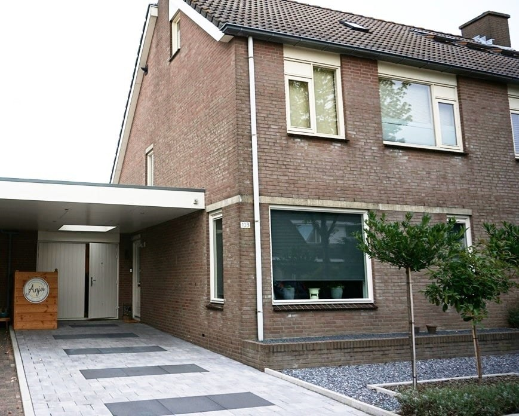
Over Anja's Handwerkatelier
Anja's Handwerkatelier bestaat sinds 2005. We zijn gespecialiseerd in handwerkbenodigdheden voor breien, haken, borduren, punchen, knopen en kantklossen, en in fournituren, behang en doe-het-zelfmaterialen voor het poppenhuis in schaal 1:12.
In 2018 bouwden we een atelier aan ons huis in Roosendaal. Daar geven we workshops, kunt u bestellingen ophalen en de artikelen in het echt bekijken in onze showkasten.
Anja Haars helpt u graag verder.
Contact
Een vraag over een garen, een kleur of uw bestelling? Bel, app of mail ons gerust.
Bestel in de webshop
Bestellingen vanaf € 55 versturen we gratis binnen Nederland en België. Liever eerst iets in het echt zien? Maak een afspraak voor het atelier.
Bel of mail
06-24478434
info@handwerkatelier.nl
Telefonisch bereikbaar van 10.30 tot 19.30 uur.
Volg ons
Atelier
Anja's Handwerkatelier
Fluwijnberg 103
4708 CA Roosendaal
Bezoek uitsluitend op afspraak.